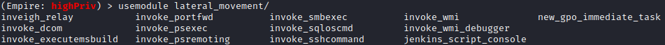

lateral_movement
Lateral movement:
Once we gain valid user credentials, we can use them to log into additional systems until we reach our target
(Empire)> usemodule lateral_movement/[TAB][TAB] #press two times TAB
